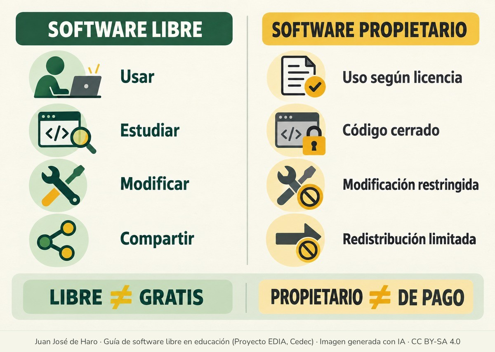

Software libre y software propietario, una introducción
Muchas veces se confunden los programas de pago con el software propietario o privativo y los programas gratuitos con el software libre. En la primera categoría entran programas como el procesador de textos, las presentaciones y la hoja de cálculo de Microsoft 365 o el sistema operativo Windows, que viene preinstalado en la gran mayoría de ordenadores y cuyo precio va incluido en el del equipo. En la segunda se encuentran programas que realizan prácticamente las mismas funciones, como los de LibreOffice o los sistemas operativos GNU/Linux, y que se pueden descargar gratuitamente de Internet.
En muchos casos, como en estos ejemplos, es así: lo libre va asociado a lo gratuito y lo propietario, a los programas de pago. Sin embargo, en otros muchos no lo es, porque se trata de conceptos distintos que responden a filosofías muy diferentes. Lo primero que debe quedar claro es que libre no es sinónimo de gratuito ni propietario es sinónimo de pago.


Cuando se habla de software libre se hace referencia a programas que ofrecen a quienes los utilizan muchas más libertades que el software propietario. El software propietario se distribuye con licencias que restringen lo que se puede hacer con él, y su código fuente, es decir, las instrucciones con las que está hecho, normalmente solo puede verlo o modificarlo la empresa o la persona que lo ha creado. El software libre también tiene autores, pero su licencia permite a cualquiera usarlo, estudiarlo, modificarlo y compartirlo. Estas libertades se explican con detalle en «Concepto de software libre».
Muchas veces los programas propietarios no cobran nada por su uso; basta pensar en la gran cantidad de aplicaciones gratuitas que hay para el móvil. Sin embargo, las cosas no siempre son lo que parecen. Lo habitual es que estas aplicaciones se financien con la publicidad que incluyen o que obtengan otro tipo de contraprestación de la que muchas veces ni siquiera se es consciente, como los hábitos de consumo, las amistades, los contactos y un largo etcétera que se resume en una idea: lo que se está cediendo son los datos personales.
Con los programas libres, en cambio, resulta mucho más difícil ocultar prácticas de este tipo, porque cualquiera puede revisar su código fuente y la comunidad de usuarios y programadores suele detectarlas y denunciarlas. Conviene, eso sí, no confundir el programa con el servicio: una plataforma en línea puede estar hecha con software libre y recoger igualmente datos de quienes la usan. Por otra parte, también existen programas libres de pago. En ellos se suele cobrar por algún servicio añadido, como la instalación, la asistencia técnica o el desarrollo de funciones a medida, o por equipos preparados para funcionar con software libre, como hace la empresa Purism, que vende ordenadores y teléfonos móviles con su propio sistema operativo libre, PureOS.